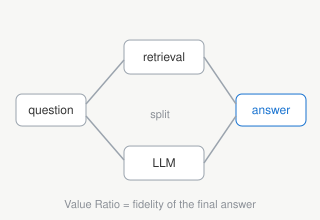
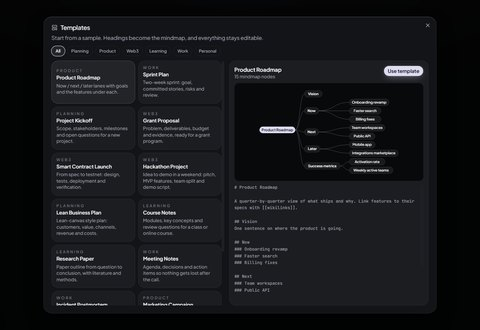

Armielyn Obinguar, Jodi Moselle Alcantara
NIAI, 2026 (accepted)
Hybrid retrieval-augmented generation for scientific QA, and a new metric, the Value Ratio, for evaluating how faithfully a RAG pipeline answers.
Armielyn Obinguar
I work in developer relations at Rise In, helping developers go from reading about AI and Web3 tools to shipping with them: guides, sample apps, workshops, and feedback to product teams.
Before that I was Head of DevRel at TARS AI and in DevRel at Virtuals Protocol / PathDAO. I started on the engineering side, as an ML Engineer at Accenture and Lead ML Engineer at Omdena on projects with UNICEF, ITU and UNDP.
My research is on retrieval-augmented generation, in particular where LLMs fall short on scientific question answering.

I'm interested in retrieval-augmented generation, how to evaluate it, and LLM interpretability and agentic systems. I'm open to collaborations in these areas.

Hybrid retrieval-augmented generation for scientific QA, and a new metric, the Value Ratio, for evaluating how faithfully a RAG pipeline answers.
Plans are written in markdown and their headings become a mindmap. Each node can be linked to the pull request that shipped it, and every version is anchored on Stellar, so anyone can check what was planned and what shipped. Sign-up works with an email and a passkey-backed smart wallet. Tested with 50 users on testnet and 20 on mainnet.

Themes, a 3D view, PNG export and a focus mode for mindmaps, plus 14 starter templates, from roadmaps and sprints to grant proposals and postmortems.
For talks, workshops or hackathon mentoring and judging, please message me on X.
| DevRel | Rise In | now |
| Head of DevRel | TARS AI | |
| DevRel | Virtuals Protocol / PathDAO | |
| ML Engineer | Accenture | |
| Lead ML Engineer | Omdena (with UNICEF, ITU and UNDP) |